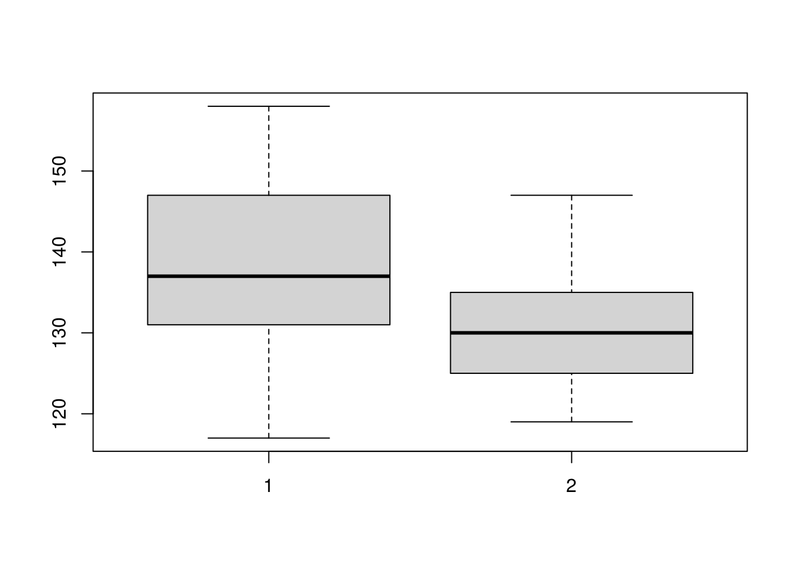

T Wilcoxon Matched Pairs Signed Ranks Test
by DocP, 08 Jun 2020
Reference:Marin R Tutorial 4.5
Data set: BloodPressure
Read the data set in to R and attach it. As always, it is a good idea to produce a graphic so we can better visualize our data. A box plot is appropriate in this case.
boxplot(Before, After)
We may also want to see a summary of the data. I renamed it “BP” to save some typing.
summary(BP)## Subject Before After
## Min. : 1 Min. :117.0 Min. :119.0
## 1st Qu.: 7 1st Qu.:131.0 1st Qu.:125.0
## Median :13 Median :137.0 Median :130.0
## Mean :13 Mean :138.3 Mean :130.3
## 3rd Qu.:19 3rd Qu.:147.0 3rd Qu.:135.0
## Max. :25 Max. :158.0 Max. :147.0The actual Wilcoxon matched pairs signed ranks test is as follows.
wilcox.test(Before, After, mu = 0, alt = "two.sided", paired = T, conf.int = T, conf.level = 0.99, exact = F)##
## Wilcoxon signed rank test with continuity correction
##
## data: Before and After
## V = 267, p-value = 0.0008655
## alternative hypothesis: true location shift is not equal to 0
## 99 percent confidence interval:
## 2.000012 14.000038
## sample estimates:
## (pseudo)median
## 7.500019All are defaults except paired and exact. “paired = T” is necessary in this case so R knows to run the Wilcoxon T rather than the Rank Sums test. “exact = T” will generate warnings due to the ties.
The small p value suggests that whatever manipulation we performed between the Before and After readings were taken must have been successful.